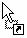
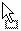

Overview
Basic Controls
Unity makes use of context sensitive drag and drop controls. For instance if you click on a term in the Table view, both the individual Term and its corresponding Synset are now dragged. Depending on where you drop this information different behavior will occur.
 If you drop here, the Synset will be added to this table. Examples: -drag rows from the Tableview to the Vocab column in the workspace -drag a treeItem to the Vocab column in the workspace (this will insert all Synsets containing that Term) -drag a row in the workspace to a new position by dropping it in the Vocab column
 If you drop here, the Term will be copied to the target Synset.
Examples:
-drag Term from the Tableview to the appropriate schema column in the workspace
-drag a treeItem to the appropriate schema column in the workspace
-drag Term from the workspace to another row in the same column
while holding down Ctrl
If you drop here, the Term will be copied to the target Synset.
Examples:
-drag Term from the Tableview to the appropriate schema column in the workspace
-drag a treeItem to the appropriate schema column in the workspace
-drag Term from the workspace to another row in the same column
while holding down Ctrl
 If you drop here, the Term will move from the previous Synset into the target Synset. Examples: -drag Term from the workspace to another row in the same column
 If you drop here, nothing will happen.
If you drop here, nothing will happen.